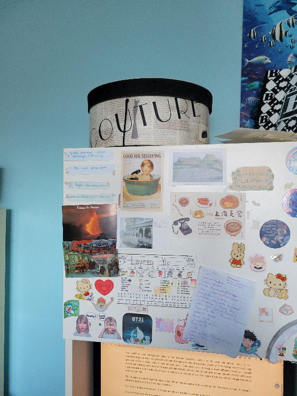
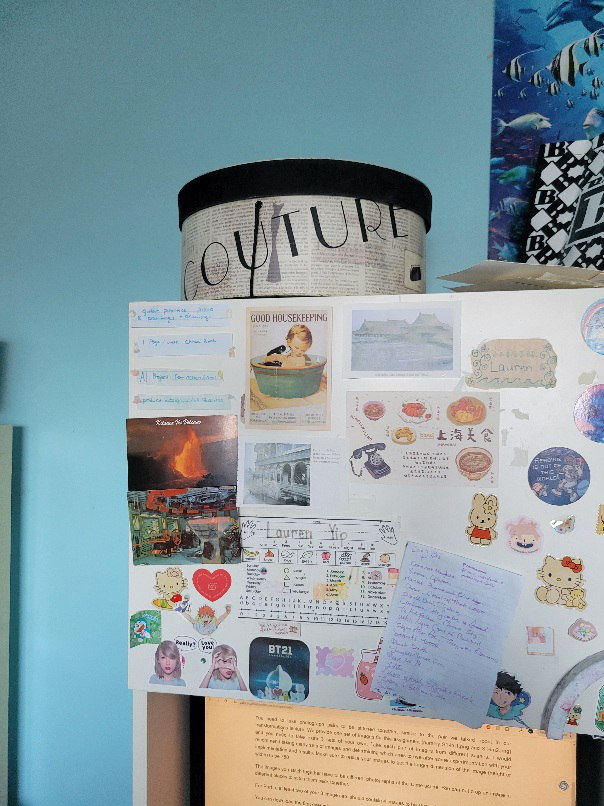

Name: Lauren Yip
Student No: 301459852
Date: 28 February 2025
I have not cheated in any way when doing this assignment, I did it on my own. I may have asked questions about the assignment on Coursys, I know that’s totally fine and even encouraged. I also already know that this class is graded on a curve. I realize that if I cheat and by some miracle not get caught, any increase in my grade will in turn shift the curve and result in lower grades for my classmates. Any undeserved extra grade would come at the cost of all others. That’s horrible! I would never do it.

 



There were significant differences between FAST and FASTR - notably, overall density. As for specific points, in soft areas like the clouds in S1 we saw way fewer points in FASTR compared to FAST. And in S2, the round areas like the box and poster features had way fewer points in FASTR than FAST.
My average time for FAST was 1.7868 seconds and for FASTR it was 0.5119 seconds.
This is a significant difference that makes sense due the nature of the functions, FASTR being more selective and quickly discarding bad points.
There was one noticeable outlier/wrong point in S1 FASTR. Other than that, FAST and FASTR performed comparably, though as expected there are fewer FASTR than FAST matches.
=== Optimal RANSAC Parameters === FAST: MaxNumTrials = 100, MaxDistance = 5 FASTR: MaxNumTrials = 50, MaxDistance = 5
I used half the number of trials on FASTR since the points are less noisy already and don't require as many trials. I kept the same distance allowing for a small amount of flexibility in matching. I also let FAST have a lower confidence threshold because there are more points overall -> fewer false positives, and FASTR has a higher confidence threshold since any point is filtered already and should be good.